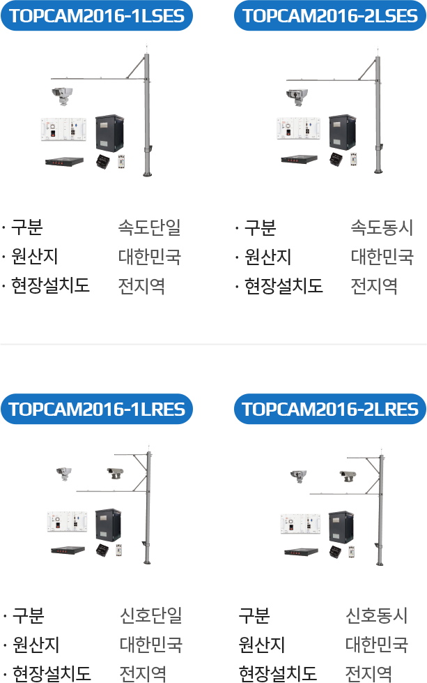
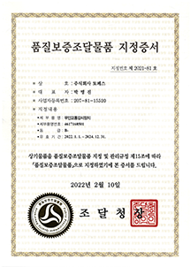

우수조달
우수조달물품
 우수조달제품제도는 조달자의 품질 향상을 위하여 중소기업이 생산한 제품으로 지정하는 제도입니다.
우수조달제품제도는 조달자의 품질 향상을 위하여 중소기업이 생산한 제품으로 지정하는 제도입니다.
토페스의 우수한 제품들 중 특히, 무인교통감시장치는 우수조달제품으로 선정된 인증 받은 제품입니다.
해당제품은 나라장터 종합쇼핑몰 사이트에서 바로 구매 가능합니다.
-
- 무인교통감시장치
-
속도위반, 신호위반 또는 전용차로로 통행하는 허가외 차량을 적발하여
그 차량의 번호를 자동인식 및 차적 조회하여 위반자 처리에 필요한 각종 양식을 자동으로
처리할 수 있는 장치


품질보증조달물품
동종업계(무인교통감시장치) 최초 품질보증조달물품 지정업체로 고객이 신뢰하는 정확한 품질로 업계 최고로 도약하겠습니다.
‘품질보증조달물품’ 지정제도는 조달사업에 관한 법률 제3조의4 제1항, 국가계약법시행령 제56조의2 및 지방계약법시행령
제64조의2, 품질보증조달물품 지정 및 관리규정에 관련 법적근거가 있습니다.
품질보증조달물품으로 지정된 제품의 경우
- 조달업체의 기술개발과 품질 향상을 유도하고 고객 만족도와 신뢰도를 높임
- 검사비용 절감 및 신속한 물품공급 등 구매조달 효율성 향상
- 품질보증조달업체의 고품질 제품생산 관리에 따른 매출 확대 등으로 기업의 품질 경쟁력 강화
‘품질보증조달물품’ 지정제도는 조달사업에 관한 법률 제3조의4 제1항, 국가계약법시행령 제56조의2 및 지방계약법시행령
제64조의2, 품질보증조달물품 지정 및 관리규정에 관련 법적근거가 있습니다.
품질보증조달물품으로 지정된 제품의 경우
- 조달업체의 기술개발과 품질 향상을 유도하고 고객 만족도와 신뢰도를 높임
- 검사비용 절감 및 신속한 물품공급 등 구매조달 효율성 향상
- 품질보증조달업체의 고품질 제품생산 관리에 따른 매출 확대 등으로 기업의 품질 경쟁력 강화

나라장터 종합쇼핑몰에서
“토페스”를 검색하세요.
토페스
토페스 우수조달물품 보러가기
검색